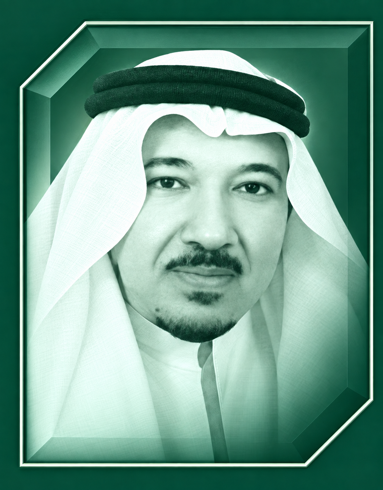

HEALTHCARE · INSTITUTIONS
Dr. Talal Husseine Saleh Beyari
- Direct consultant to Kofi Annan on child abuse in Africa and his direct contact for the initiative, 1997–2004
- Former Deputy Minister of Health for Curative Medicine, Saudi Arabia, serving for nearly two years
- Former Director General of Health Affairs in Makkah and several Saudi regions, including Al-Qassim and Al-Ahsa
- Established Saudi Arabia’s primary healthcare system and serves on the boards of multiple hospitals